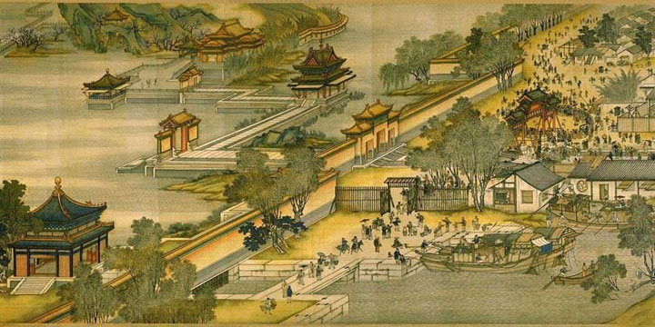
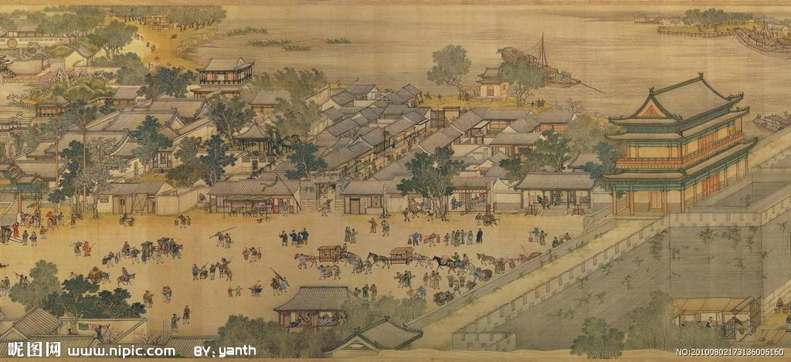

人分三六九等，肉有五花三层。就拿当今娱乐圈来说，有风光无限的天皇巨星，也有潦倒落魄的龙套演员。前者的出场费动辄千万，后者的报酬只有一份盒饭。再拿当皇帝来说，既有霸气侧漏的开国君主，也有朝不保夕的亡国之君。如果把政坛比作娱乐圈，秦皇汉武、唐宗宋祖就是四大天王；刘邦与朱元璋算是草根影帝；雍正乾隆也因为花边新闻过多，屡上头条。就连像曹操、刘备、孙权这样的二线演员，托经纪人罗贯中的福，就成了国际明星。但有一位皇帝，具有一线明星的优质条件，却远离媒体，不愿过度曝光，如此的低调奢华有内涵，简直就是个安静的美男子呀，他就是东汉开国皇帝刘秀。
刘秀算得上中国最具偶像气质的皇帝之一了。首先他是帅哥一枚，据《后汉书》记载，刘秀长得“美须眉，大口，隆准，日角”，这简直就是古代版吴彦祖呀！比起豹眼驼背的嬴政，长臂大耳的刘备，不知高到哪里去了。其次他受过高等教育，刘秀青年时期就读于古代最高学府——太学。当时的汉朝算是世界上唯一的超级大国，长安的太学就是好比现在的哈佛牛津。虽然刘秀因经济原因中途退学，但和社会青年刘邦、半文盲朱元璋相比，绝对算中国学历最高的皇帝。
比尔·盖茨的经历告诉我们，大学肄业生也能够成为世界首富。同样，刘秀的经历告诉我们，没拿到学位证书也可以当国家领袖。大家试想一下，一个长的很帅、学历又高的小鲜肉，放到现在绝对是万人追捧的男神，在当时刘秀就客串一次服装模特。王莽篡汉之后，汉家礼仪尽废除。有一次刘秀穿着威武华丽的汉家衣冠出现在洛阳，全城的人民都沸腾了，粉丝们激动地哭喊着：“不图今日复见汉官威仪。”第二天，刘秀的造型就登上了世界级时装杂志的封面， “汉服style” 瞬间风靡全球。但我们的刘秀不甘心当一个偶像派花瓶，而是励志要成为一名实力派英雄。影视明星都有一部代表作，比如曹操的最高票房是《赤壁》，项羽的经典电影是《乌江》，如果说是《赤壁》是灾难片，《乌江》是爱情片，那刘秀的成名作《昆阳》就是一部科幻大片。首先群众演员的数量就很震撼，刘秀带领三千敢死队把王莽四十多万人打得落荒而逃，比《无极》《黄金甲》都要劲爆。然后特型演员抢眼，王莽部下有个巨无霸，身长一丈，腰圆十围，被刘秀一个山崩地裂斩给秒了。奥特曼打小怪兽呀，有木有！其次动物们也来凑热闹，王莽出动召唤兽来对付刘秀，战场上虎啸狮狂，鹰啼豹吼，就差出现恐龙了。最后老天也很配合：大战当天，电闪雷鸣，暴雨倾盆，影音效果十足！我经常在想，如果把史书中这段文字拍成电影，估计就没《阿凡达》什么戏了。昆阳之战之前，刘秀还是一名默默无闻的小演员。那昆阳之战以后，刘秀就是名副其实的天皇巨星。昆阳之战就像一个梦，激烈而又神秘；刘秀就像一个战神，威猛而又传奇。在别人眼中，他的成功太突然，似乎鬼使神差、如有天助，刘秀真的是仅仅因为命运好吗？西汉末年，王莽篡汉。群雄并起，天下大乱。勤劳的放牛娃兼落魄的皇N代刘秀，跟随哥哥起兵讨伐王莽，最终恢复汉家江山，成为东汉王朝的开国皇帝。历史上很多的强悍人物，在青少年时期就很愤青。比如少年项羽，看到秦始皇的专车，就站在旁边骂街，立志要取而代之。童年时期的刘备，没事就带着几个熊孩子在大树下面玩cosplay，扮演皇帝，真是个个都有被查水表的潜质。但刘秀的少年时期却默默无闻，最大的愿望就是当个保安，娶个村花，可上天却给刘秀安排一份职业——做皇帝。西汉末年，有一位叫蔡少公的心理专家，发了一条微博，内容是“刘秀当为天子”。消息一发出，全世界都炸了锅，大家都在猜测这位“刘秀”是谁。当朝国师刘歆为了讨彩头，专门改名叫刘秀。此时谁也没注意到，就在南阳郡的白水村，有位叫刘秀的屌丝青年正在默默种田，他的逆袭之旅，就在这条神秘的预言中拉开帷幕。这还不算神奇，在刘秀创业的最困难时期，有一次他逃难迷路，路边忽然出现一位白胡子老头，给刘秀指明方向，助他成功脱险。这位白胡子老头到底是谁！甘道夫？邓布利多？土地公公？不得而知。翻阅史书，似乎刘秀的创业之路一直是如有神助，难道真是上天安排的最大吗？要论西汉的末年最劲爆的流行语是什么，那非“努力”一词莫属。刘秀经常以这个词教育臣下，而刘秀自己也是这两个字的实践者。看看刘秀的名言吧：有志者事竟成、克己奉公、披荆斩棘 、疾风知劲草、得陇望蜀……这些话都是正能量满满，而且比现在那些没营养的网络词语更有生命力，一流行就是两千多年，成为中国人皆知的成语。据统计与刘秀有关的成语将近20个，刘秀真是名副其实的“成语帝”呀。现在大家明白了吧，刘秀的一生就是一段在命运中奋斗的故事。他以实际行动告诉大家，什么叫“三分天注定，七分靠打拼。”以命运为动力，加上自身的努力，必将迎来人生的给力！努力也是一门学问，对于领导者来说，即要让自己努力，也要让员工努力。用人与用己，缺一不可。用己的最高境界当属雍正，这位工作狂一年只在生日那天给自己放天假，平均每天只睡四个小时，结果活活累死，当老板做到这种境地，小弟佩服佩服。用人最高境界当属刘邦，他慧眼识才，知人善用，但这位小流氓却不爱读书学习，满口骂脏字，用书生的帽子当尿盆，如此地傲娇，让小弟望尘莫及。而我们的刘秀却是既用人又会用己，他带着老乡团“云台二十八将”出来打天下，自己也以积极的热情投入的工作中。儿子劝他多休息，刘秀却说，因为自己喜欢工作，所以并不感到疲劳，这就是成语“乐此不疲”的来历。把管理当做艺术，把工作当成享受，这才是一位合格的好老板。俗话说：人怕出名猪怕壮。明星一旦有了成就，就立即会招来无数的绯闻。刘秀成功了，但他没耍大牌，还是继续做一名安静的美男子中国有句老话，叫做闷声发大财。就是告诉我们，要低调做人，不要总想搞个大新闻。刘秀的处世之道也是这样，用他自己话来说，那就是“用柔。”刘秀与他的哥哥刘縯，两人的性格一刚一柔。刘縯侠肝义胆，霸气侧漏；刘秀低调内敛，锦里藏针。但正是因为刘縯的锋芒毕露，功高震主，反遭盟友杀害。刘秀听到这个消息以后，跑到杀兄仇人面前，痛诉刘縯的缺点，但回到家中之后却抱着哥哥的牌位失声痛哭。匹夫见辱，拔剑而起。君子报仇，十年不晚。刘秀以他的隐忍，换得了发展壮大的机会，最终成就一番伟业，还哥哥一个公道。还有一故事，也是刘秀用柔的最好证明：刘秀消灭王朗后，在他微信朋友圈里发现了自己部下通敌的秘密信息。所有人都建议把这些内容公布于众，刘秀却果断清除了聊天记录的截图，安稳了军心。熟读《三国》的同学会发现，这不是曹操官渡之战用的把戏吗？没错，但曹操不是原创，刘秀才是这项专利的发明者。“刚”能激发斗志，“柔”能化解缺点。刘秀就是用这种方法，以柔创业，以柔治国，开创了一个风化最美、儒学最盛的时代。刘秀对待百姓是宽柔，对待爱人同样是温柔。文章的经历告诉我们，事业的成功，往往伴随着爱情的失败。但刘秀的爱情故事却让无数人心动：公元13年的猫扑论坛出现一张美女照片，引起网络轰动。经过人肉，得知此女就是“南阳第一萝莉”阴丽华，大学生刘秀就是她的脑残粉之一。为了表达对偶像的爱，刘秀用了一招被当今屌丝用烂的方法，那就是去阴丽华贴吧刷屏，起个标题党叫“仕宦当做执金吾，娶妻当得阴丽华。”意思就是我要当中南海保镖，我要和阴丽华滚床单。没想到十年之后，刘秀真的成功迎娶十九岁的阴丽华。青梅竹马，与子偕老，如此一段浪漫的爱情，与其说是传奇，不如说是童话。由此来看，刘秀算是中国第一个自由恋爱的皇帝。刘秀如此碉堡，就好比别人家的孩子，经常会被拿来做比较。刘邦是西汉的开国皇帝，刘秀的东汉的中兴之主，两人虽然没见过面，但在人们的意淫中却pk了无数次。最著名的就是诸葛亮与曹植曾各自撰文，探讨刘邦与刘秀谁厉害。一个是蜀汉的国务院总理，一个是魏国的太子党兼作协主席。两国如果有类似《人民日报》的媒体，想必这两文章都是头版头条。曹植认为，相比个人能力与品德，刘秀不知比刘邦高到哪里去了，但刘邦的团队比刘秀的团队强。诸葛亮反驳曹植，认为刘秀的团队一点也不比刘邦差，只是刘秀个人能力太强，掩盖了属下的风采，当然诸葛亮同样认为刘秀比刘邦优秀。讨论来讨论去，结论都是刘秀厉害。没错，比刘秀更厉害的人只能存在于二次元了。但也有唱反调的，比如马援。他认为刘秀文武双全、品德高尚、勤政亲为、喜欢读书，而刘邦是啥也不干所以啥都能干，并且喜欢喝酒，因此刘邦比刘秀厉害。真不明白这是低级吹还是高级黑呀！以上就是刘秀传奇而又踏实，激烈而又温柔的一生，他的出现波澜不惊，却能以柔克刚。可能正是因为刘秀的低调内敛，使他的历史功绩与知名度不成正比。但这未必就是坏事，在这个喧嚣的世界中能保持一份恬静实属难得，我们不要打扰他，就给这位安静的美男子，在时空中留下一个宁静的空间吧。正所谓：柔术创中兴，慕英雄配红颜，娶妻当如阴丽华。伟略开后汉，思真人生白水，令人遥想汉官仪。刘秀是个文武双全的皇帝，历史还有哪些出将入相的臣子呢？欢迎阅读我的最新答案。